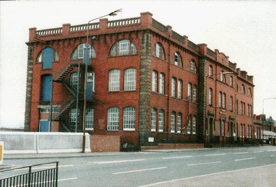
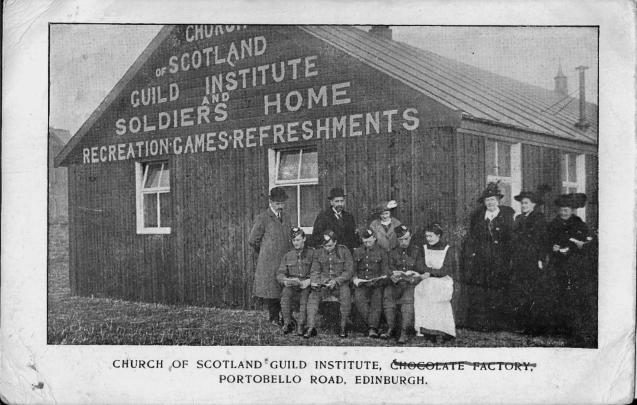

Chocolate Factory

If you are queuing at the traffic lights at King’s Road waiting to come into Portobello, you have probably looked at this red brick building many times and may have wondered about its history. Older members of the community will think of it as Ramsay Tech, where many apprentices came for day-release classes as part of their training, and W. M. Ramsay Technical Institute can still be seen on the building. This, however, was not its original purpose. If you look further up the building you will see the date 1906 on the stonework. This is when it was built as a chocolate factory.
At the end of December 1906, The Scotsman newspaper, in a review of the year’s commercial activity in Edinburgh, remarked: ‘… one of the most satisfying features of enterprise is the erection of a new chocolate factory in Portobello near to King’s Road, and abutting the North British Railway line to Leith, which when completed will give employment to several hands’.
Permission to build the factory had been granted twelve months previously to Charles William Schulze, originally from Brunswick in Germany, but for many years a prosperous cloth merchant in Galashiels. He wanted to establish a business making luxury chocolate products in the Belgian or German style, which would not only be a first for Portobello, but also for Scotland. He was equally radical and innovative in the design of his factory. Situated on the western edge of Portobello, at the start of the main road to Edinburgh, the building is four storeys high, about 160 feet long, 55 feet wide, with exterior walls of red pressed fire brick. However, it is what is behind the walls that astonished local residents as they watched the construction proceed.
Schulze decided to have his factory built on reinforced concrete foundations, with floors and roof of the same material, supported on reinforced iron pillars and beams. People remarked on the extreme depth of the foundations, the thickness of the floors and flat roof, and the strength of the reinforced iron pillars and beams. All of this was said to be necessary because of the clay sub-soil and the need to bear the weight of heavy machinery. The money for the construction of the factory and the purchase and installation of machinery was provided by Schulze Snr., who leased the building and fittings to the Continental Chocolate Company. This was essentially a partnership formed by his sons Charles Frederick Schulze, Hugh Lees Schulze and William Rudolph Schulze, all of whom had been born in Britain. Charles and Hugh came to live in Portobello at No. 19 Abercorn Terrace, but Rudolph seems to have remained in Galashiels. Delays with machinery and the need to train staff meant that full production did not get underway until 1911, but only after a number of skilled workers had been imported from Germany. However, any hopes that the Schulzes may have entertained that the company was now set for a prosperous future were dashed by the outbreak of the First World War only three years later.
Portobello was not immune to the wave of anti-German hostility that engulfed Britain, with its attendant paranoia concerning spies and secret agents, especially after the fall of Antwerp. Almost inevitably, attention focused on the Continental Chocolate Company and its large, extremely strongly-built premises located at an important road junction, and next to two railway lines. A sort of hysteria gripped the community. It was well known that the owners were German, and soon it was alleged that the specially strengthened floors were really to bear the weight of heavy guns that could threaten Leith Docks and perhaps Rosyth Naval Base. It was pointed out that the large concrete loading bay could quite easily provide parking for over a dozen military lorries. Questions were being asked about the German workers. Did they also have a more sinister role as spies?
As the speculation grew ever wilder, the civil authority decided to act and Edinburgh City Police entered the factory on 16th October 1914, carrying out a thorough inspection lasting several hours. On 19th October, The Scotsman reported: ‘Nothing of a compromising character was found. The military authorities are also engaged in an inquiry as to the remarkably solid character of the concrete foundations and the great strength of the building.’ The following day it was reported that ‘the military authorities have come to the conclusion that there is no occasion for them to take action concerning this building.’ Although some employees had been removed and taken to Edinburgh by the police as being enemy aliens of military age, the decision must have brought some relief to the Schulzes, but this proved to be short lived.
The military did take over the building, under the Defence of the Realm Act, as accommodation for troops, and on 30th October 1914, it was occupied by a detachment of Royal Engineers who had been living locally under canvas. This apparent change of mind was probably prompted by the revelation that the building’s owner, Charles William Schulze, was not, as everyone assumed, a naturalised British subject. Despite having lived in this country for around fifty years, he did not apply for British citizenship until after the outbreak of war in August, only to be told by the Home Office that he was too late, as it was no longer granting naturalisation papers to Germans. The consequence was that Mr Schulze remained a German national and had to register with the police in Galashiels as an enemy alien. The military felt that it was not in the public interest for such a strong building in an important strategic position to be in ‘enemy hands’ and took it into their control, where it remained until the end of the war, providing quarters for thousands of troops.
Tragically, the First World War brought more than financial loss to Charles William Schulze. One son, William Rudolph, serving as a private in the Cameron Highlanders, was killed in action on 18th July 1916, and another, Hugh Lees Schulze, a Lieutenant in the Dorset Regiment, was killed on 29th October 1918.

Several military institutes were erected in Portobello to provide somewhere for troops to relax, entertain themselves, read and write letters. The building shown above was opened at the chocolate factory in November 1915 by the Young Men’s Guild. It became known as ‘Tommy’s Palace 2’. At first, in June, there was a marquee erected that could seat 500 men, but this was replaced by the large wooden hut. W. M. Ramsay was honorary superintendent of this institute. William McCulloch Ramsay, the driving force behind the founding and organisation of the military institutes, was born in Fife in 1854, but, when he was very young, he was sent to live with an aunt in Portobello. By his own admission, he was “without much schooling” and, after serving an apprenticeship at Buchan’s Pottery, had a variety of jobs including on the railways. He also opened a fruit and vegetable shop on the High Street. He eventually found a post that satisfied his concern for the education and wellbeing of young people, and his temperance ideals. This was as an agent with the Hope Trust, which had been founded by John Hope, an Edinburgh lawyer and philanthropist, in 1847 as the British League of Juvenile Abstainers. It was aimed at working-class children and members, usually at the age of six or seven, took a pledge of total abstinence from alcohol, tobacco and opium, and promised to study the Bible. The trust’s literature and activities, as well as graphically detailing the ‘evils of drink’, also strenuously promoted Protestantism. As an agent, Ramsay travelled round ‘spreading the word’ by addressing meetings of adults as well as children. In Portobello, he founded a youth organisation called the Ramsay Bible Guild. Although its core purpose was to foster discussion of the Bible, the guild was concerned with the whole person and had sections for debating, football, swimming, cycling and social activities. He served on the Edinburgh School Board from 1909 and became Convener of the Continuation Classes Committee of the Education Authority.
When the last troops had left the chocolate factory, its management was transferred to the Ministry of Labour and in 1919 it began a new life as a government training facility for disabled ex-servicemen. The large building could cater for over 400 trainees in a number of trades including construction, engineering, motor engineering, vehicle body work and tailoring. A monument to the high level of skills attained by the trainees still stands today in the shape of the nearby house, No. 72 Inchview Terrace, which was built by them. In 1922 the premises were taken over by Edinburgh Education Authority who converted what was essentially a factory into a technical school, running evening classes for apprentices. Over 700 apprentices enrolled in the first session of what became the highly regarded W. M. Ramsay Technical Institute. Over many years it provided day and evening classes in a wide range of crafts.
The building was listed as Grade A on 26th August 1989. It is considered to be of national significance as one of the few works by E P Wells, the first British holder of a reinforced concrete patent. This is one of the first half-dozen reinforced concrete multi-storey buildings in Scotland, the others being built to the French Hennebique system. The contractors were Stuart's Granolithic Co Ltd. It was converted to housing in 1995. To hear the story of the chocolate factory during World War One, click on this link: https://www.bbc.co.uk/sounds/play/p01xndg7